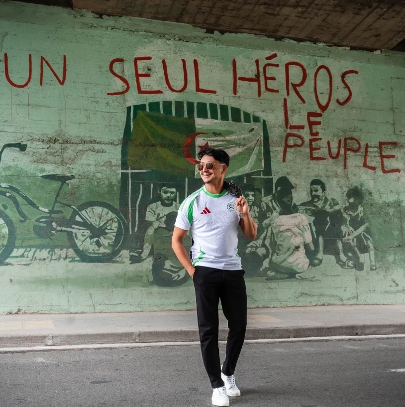

Un départ à contre-courant
Titulaire d'une licence en économie de l'Université de Dely Brahim, Farouk ne suit pas la voie tracée. Dès 2017, il se tourne vers les réseaux sociaux — un pari peu commun pour un jeune diplômé.
L'homme derrière la marque
De Snapchat aux rayons des supermarchés. L'histoire d'un jeune Algérois qui a transformé le rire en marque.

Le parcours
Titulaire d'une licence en économie de l'Université de Dely Brahim, Farouk ne suit pas la voie tracée. Dès 2017, il se tourne vers les réseaux sociaux — un pari peu commun pour un jeune diplômé.
Ses vidéos humoristiques et ses défis audacieux capturent l'attention d'un public jeune et connecté. Un contenu léger, souvent trivial mais relatable, qui parle vrai.
En exploitant l'algorithme des plateformes, il bâtit une croissance organique et une communauté qui le suit d'une plateforme à l'autre : la base de tout ce qui suivra.
Des rues d'Alger aux rayons des supermarchés avec Rifkus, Rifka transforme sa notoriété en marque. Le personal branding devient un véritable business.
« Rifka n'est plus seulement un “Rifka Instagram” : c'est une marque globale, la preuve que le personal branding transforme la chance en empire. »
La conclusion
Son parcours, des rues d'Alger aux rayons des supermarchés, enseigne que la célébrité durable exige vision, résilience et diversification.
Dans une Algérie connectée, où les influenceurs façonnent la culture et l'économie, Rifka reste un cas d'école : la preuve qu'avec une stratégie solide, on peut passer du viral au vital.
Découvrir Rifkus